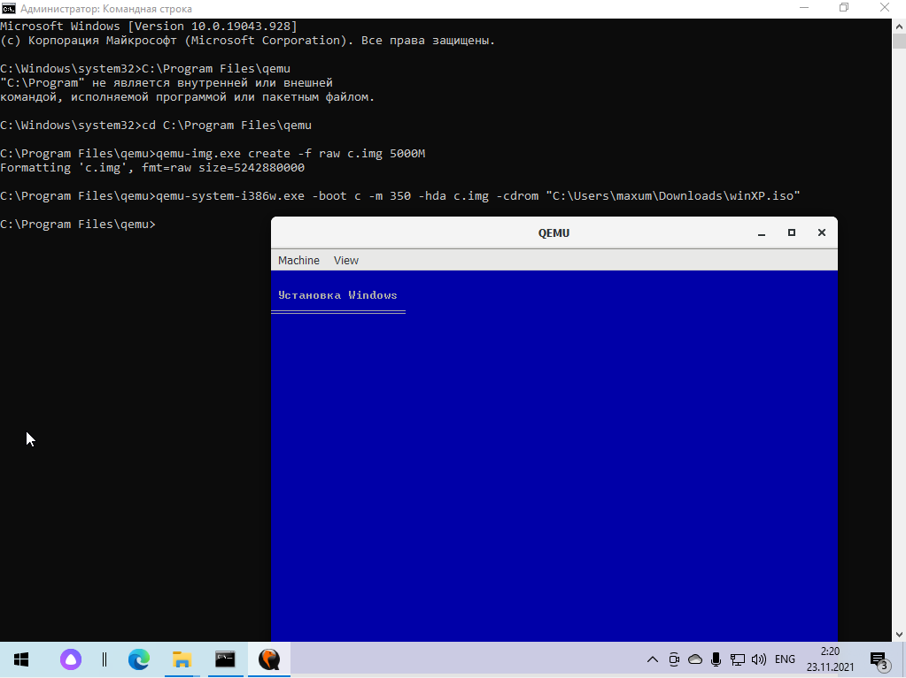

QEMU — свободная программа с открытым исходным кодом для эмуляции аппаратного обеспечения различных платформ. Эмулятор QEMU прост в установке и относительно прост в использовании.
Не оснащен графическим интерфейсом для обеспечения его настройки - это просто команды терминала. Демонстрирует хорошую стабильность.
У qemu нет графического интерфейс, всё взаимодействие происходит через командную строку. Запустим командную строку нажатием комбинации клавиш "Windows+R" и пропишем "cmd". У нас откроется командная строка.
Создаем виртуальный жесткий размером 5 ГБ образа IMG с названием c.
Команда:
qemu-img.exe create -f raw c.img 5000M
Теперь необходимо создать виртуальную машину, указать ее архитектуру, выбрать откуда она будет грузиться, а также указать путь к ISO-файлу
Команда:
qemu-system-i386w.exe -boot c -m 350 -hda c.img –cdrom «C:\Users/maxum/Downloads/winXP.iso»
После чего у нас открывается qemu с установкой Windows
